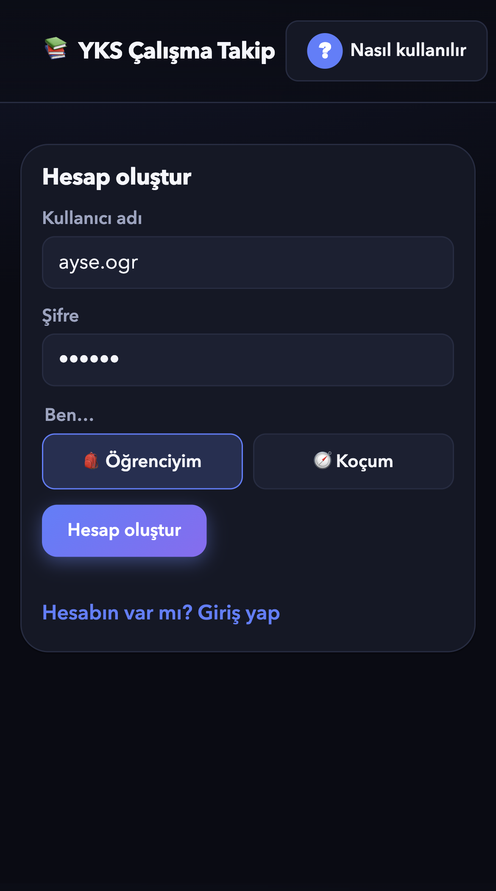
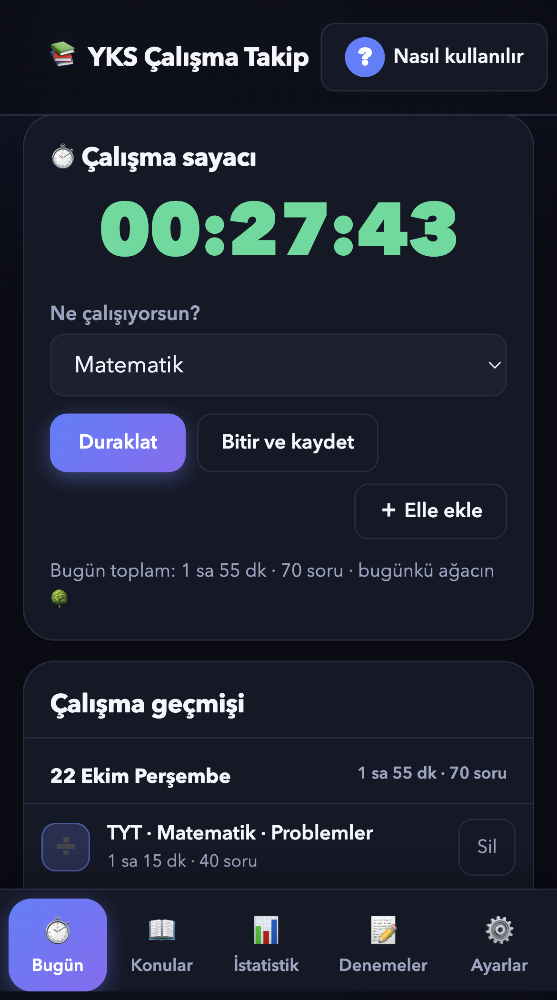
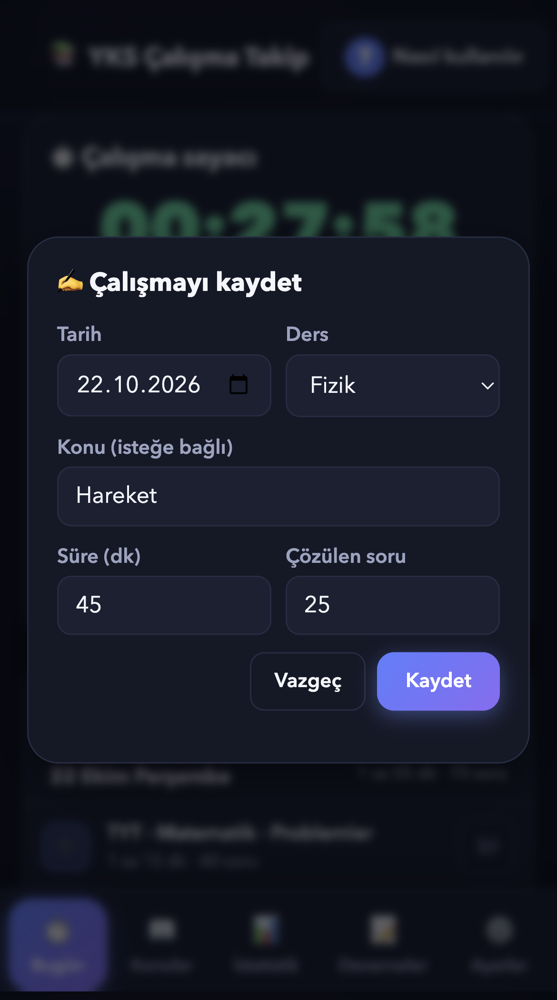
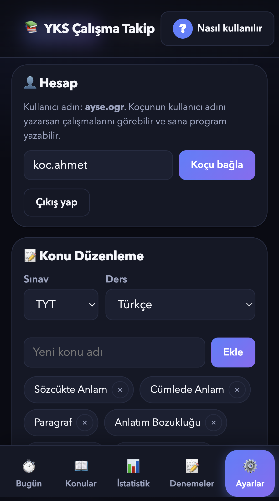
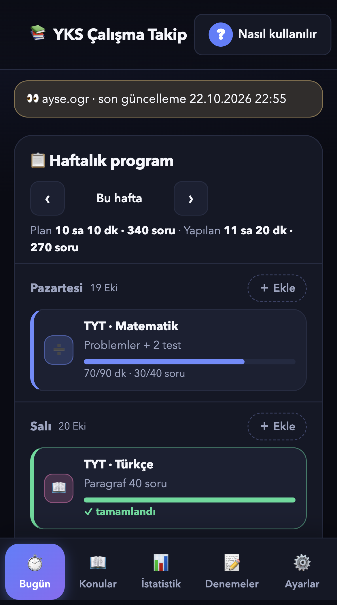

https://yks-takip.doganaym22.workers.dev
Fotoğraflardaki ayse.ogr ve koc.ahmet örnek hesaplar. Kendi kullanıcı adını ve şifreni sen seçersin.
Siteyi aç, “Hesabın yok mu? Hesap oluştur”a dokun. Kullanıcı adı ve şifre seç. Öğrenciysen Öğrenciyim, koçsan Koçum’u işaretle. Kullanıcı adında Türkçe harf olmaz: “nazlı” değil “nazli”.
Telefonda kolay açmak için: iPhone’da Safari’de Paylaş, sonra Ana Ekrana Ekle. Android’de Chrome menüsünden Ana ekrana ekle.

Bugün sekmesinde ne çalışacağını seç, Başlat’a dokun. Uygulamayı kapatsan da sayaç saymaya devam eder. Bitince “Bitir ve kaydet”e dokun; süre hazır gelir, konuyu ve çözdüğün soru sayısını yazıp kaydet.
Altta bugünkü toplamın ve günün ağacı görünür. Ne kadar uzun çalışırsan ağaç o kadar büyür.

Sayaç kullanmadıysan “Elle ekle”ye dokun. Tarihi, dersi, konuyu, süreyi (dakika) ve çözdüğün soru sayısını girip Kaydet’e dokun. Geçmiş bir günü de seçebilirsin.
Programda olmayan, kendi eklediğin çalışmalar da kaydedilir ve hepsi koçuna gider. Yanlış girdiysen Çalışma geçmişinde o satırdaki Sil’e dokun.

Ayarlar’a gir, Hesap kısmına koçunun kullanıcı adını yaz ve “Koçu bağla”ya dokun. Bundan sonra koçun çalışmalarını, konularını ve denemelerini görür, sana haftalık program yazar. Bağlantıyı aynı yerden “Koçu kaldır” ile kesebilirsin.

Koç hesabıyla girince en üstte öğrencinin adı ve son güncelleme zamanı görünür. Her günün yanındaki “Ekle” ile ders, ne yapacağı, hedef süre ve hedef soru girilir.
Öğrenci çalıştıkça çubuklar dolar, hedefe ulaşınca “tamamlandı” yazar. Bir maddeye dokunup düzenleyebilir ya da silebilirsin. Tüm çalışmalar altta Çalışma geçmişinde, gelişim İstatistik’te.
